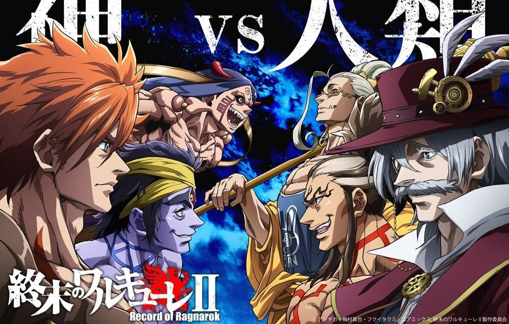

Record of ragnarok
Record of Ragnarok
Record of Ragnarok o Shuumatsu no valkyrie es una serie anime que se ambienta en un mundo donde los humanos deben vencer a los dioses todopoderosos en siete rondas. Si no lo consiguen, su existencia terminará para siempre. Esta es la premisa de las batallas de Ragnarok.

En en esta historia, hacen aparicion como personajes muchos seres humanos y dioses de los cuales forman parte de la historia y la mitologia de la vida real, como lo pueden ser "Nikola tesla Y Jack el destripador" por parte de la humanidad o "Zeus y Belzebuth" por parte de los dioses